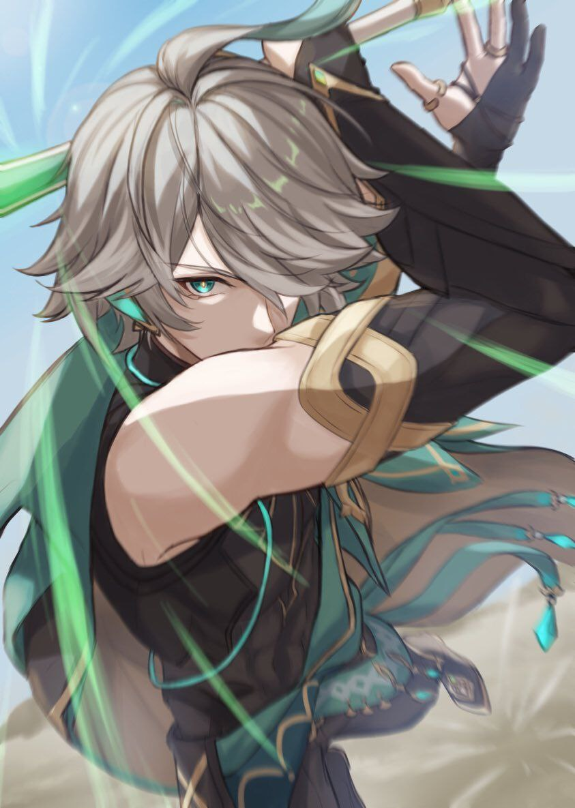

Arataki
Diluc
Keya
Ayato
Zhongli
Arataki Itto
Fast as the wind and mighty as
thunder, he is an intrepid man with Oni blood running through his
veins.
Diluc Ragnvindr
As the wealthiest gentleman
in Mondstadt, the ever-dapper Diluc always presents himself as the
epitome of perfection. But behind the courteous visage burns a zealous
soul that has sworn to protect Mondstadt at all costs, allowing him to
mercilessly vanquish all who threaten his city.
Kaeya Alberich
In the Knights of Favonius,
Kaeya is the most trusted aide for the Acting Grand Master Jean. You
can always count on him to solve any intractable problems. Everyone
in Mondstadt loves Kaeya, but no one knows what secrets this witty,
charming knight has...
Kamisato Ayato
Current head of the Kamisato
Clan and, accordingly, the Yashiro Commissioner. He always has a way of
attaining his purpose in a well-thought-out manner. However, few
people understand what that "goal" he holds most dear is.
Zhongli
Wangsheng Funeral Parlor's
mysterious consultant. Handsome, elegant, and surpassingly learned.
Though no one knows where Zhongli is from, he is a master of courtesy and rules.
From his seat at Wangsheng Funeral Parlor, he performs all manner of
rituals.
